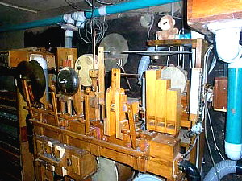

Multiplexní varhany (někdy nazývané podle v nich použité skříňové vzdušnice "unit" či "unitní") důsledným využitím transmisí a extenzí (viz popis spojek v úvodní kapitole k trakturám) a tím několikanásobným využitím píšťal nabízejí větší množství rejstříků v různých polohách při současné úspoře místa a materiálu. Princip můžeme názorně ilustrovat např. na principálové skupině varhan. Následující animace ukazuje principálovou skupinu v klasicky vystavěných varhanách. Každý ze šesti rejstříků skupiny (řada Principál 8', Oktáva 4', Kvinta 22/3', Oktáva 2', Kvinta 11/3', Oktáva 1') je vystavěn z plné řady píšťal, každá klávesa na klaviatuře má v každém rejstříků svou píšťalu, píšťal je tedy tolik, kolik je počet tónů (v tomto příkladě mají varhany tónový rozsah C-c4, což je 61 kláves - píšťal) krát počet rejstříků, číselně 61 x 6 = 366 píšťal: |
Srovnejme teď provedení stejné principálové skupiny u multiplexních varhan. Principál 8' je tvořen opět řadou 61 píšťal stejně jako u klasických varhan. Další rejstříky už ale nemají celou řadu, využívají vždy část řady rejstříku, ze kterého jsou odvozeny (tady osmistopého Principálu), která je na příslušném konci rozsahu (v našem příkladě vždy na horním) doplněna o patřičný počet píšťal. Rejstřík Oktáva 4' je získán z píšťal Principál 8', prvních 12 píšťal je nevyužitých (u čtyřstopého rejstříku klávesa velké C na klaviatuře odpovídá tónu - píšťale malé c) a na horním konci rozsahu je naopak 12 píšťal přidáno (tóny c4 až c5). Pro získání dalšího rejstříku nám tak místo 61 píšťal stačí přidat jen 12 píšťal. Rejstřík Kvinta 22/3' vychází opět se základního osmistopového rozsahu, nevyužito zůstane prvních 18 píšťal (na klávese velké C zní tón malé g), na horním konci naopak použije12 přidaných píšťal Oktávy 4', ke kterým je ještě přidáno dalších 6 píšťal (tóny c5 až fis5). Podle stejného principu jsou z principálové řady "vytaženy" i zbývající rejstříky Oktáva 2', Kvinta 11/3'a Oktáva 4', pro které je na horním konci přidáno vždy po šesti dalších píšťalách (až po poslední - c7). Celkem tedy potřebujeme pro stejný počet rejstříků jen 61 + 12 + 6 + 6 + 6 + 6 = 97 píšťal: |
Následující obrázek ukazuje vazbu klaviatury pro
jednotlivé rejstříky na odpovídající píšťaly z řady. Tato vazba je zde
určena výhradně polohou rejstříku, klaviatura se proto jen pomyslně posouvá
směrem doprava tak, aby první klávesa (velké C) ovládala píšťalu odpovídajícího
tónu (C pro 8', c pro 4', g pro 22/3' atd.): |

Očíslujeme-li píšťaly zleva doprava (velké C bude
mít číslo 1, c7 číslo 97), můžeme přiřazení píšťal rejstříkům
shrnout do tabulky: |
| Rejstřík |
rozsah klaviatury |
píšťaly |
tónový rozsah |
| Principál 8' | 61 kláves C-c4 |
1 - 61 |
C-c4 |
| Oktáva 4' | 61 kláves C-c4 |
13 - 73 |
c-c5 |
| Kvinta 22/3' | 61 kláves C-c4 |
20 - 80 |
g-g5 |
| Oktáva 2' | 61 kláves C-c4 |
25 - 85 |
c1-c6 |
| Kvinta 11/3' | 61 kláves C-c4 |
32 - 92 |
g1-g6 |
| Oktáva 1' | 61 kláves C-c4 |
37 - 97 |
c2-c7 |
Z tabulky i předchozího diagramu je patrné, že píšťaly multiplexované řady mají více funkcí. Některé z nich patří jednomu rejstříku (píšťaly 1 až 12 a 93 až 97), jiné dvěma rejstříkům (píšťaly 13 až 19 a 86 až 92), další třem atd. Všem šesti rejstříkům patří píšťaly v rozsahu 37 až 61 (tóny c2-c4). Na jedné straně je to výhoda - místo šesti píšťal u klasických varhan máme jen jednu, na druhé straně zní při hře méně píšťal, pokud se "sejde" požadavek na píšťalu od více rejstříků současně (např. zahrajeme-li souzvuk c1 + c2 při zapnutém Principálu 8' a Oktávě 4', měly by znít píšťaly tónu c1a c2 v Principálu a c2-c3 v Oktávě, u klasických varhan to budou čtyři samostatné píšťaly, u multiplexních varhan je píšťala c2 jen jedna, takže zazní pouze tři píšťaly). Ještě markantnější bude tento rozdíl při akordické hře, následující tabulka srovnává situaci pro hraný akord c1-e1-g1-c2 a všechny zapnuté rejstříky: |
| Multiplexní
varhany |
Vystavěné varhany |
||
| Rejstřík |
zní tóny principálové
řady: |
píšťaly |
zní tóny příslušného
rejstříku: |
| Principál 8' | c1-e1-g1-c2 |
25,29,32,37 |
c1-e1-g1-c2 |
| Oktáva 4' | c2-e2-g2-c3 |
37,41,44,49 |
c2-e2-g2-c3 |
| Kvinta 22/3' | g2-h2-d3-g3 |
44,48,51,56 |
g2-h2-d3-g3 |
| Oktáva 2' | c3-e3-g3-c4 |
49,53,56,61 |
c3-e3-g3-c4 |
| Kvinta 11/3' | g3-h3-d4-g4 |
56,60,63,68 |
g3-h3-d4-g4 |
| Oktáva 1' | c4-e4-g4-c5 |
61,65,68,73 |
c4-e4-g4-c5 |
| Celkem: | 17 píšťal |
24 píšťal |
|
V tabulce je dobře vidět vícenásobný požadavek na
některé píšťaly (jsou zvýrazněny stejnou barvou ve sloupci s čísly) u
multiplexních varhan. U vystavěných varhan se tento jev nevyskytuje, každý
tón má v každém rejstříku svou píšťalu sám pro sebe. Část píšťal má dvojí
funkci (c2, g2, c3, c4 a
g4), píšťala g3 dokonce trojí. V celkovém součtu
pak u těchto multiplexních varhan při hře akordu c1-e1-g1-c2
zní téměř o 30% méně píšťal, než u varhan vystavěných (17/24). |
Multiplexní varhany nepoužívají samozřejmě jen jednu řadu píšťal, většinou jsou postaveny nejméně se třemi a více řadami, např. s píšťalami Principálu, Krytu a Flétny. Z těchto řad (základů), které se mezi sebou liší jednak charakterem a jednak polohou (kryty jsou obvykle vystavěny od 16' polohy - krytá píšťala má ve skutečnosti poloviční délku, takže velikostí odpovídá osmistopému rejstříku i když zní o oktávu níže). Vzhledem k nevýhodným vlastnostem rejstříků v kvintové a terciové poloze (temperované ladění vůči základnímu tónu) se tyto tři řady někdy doplňují samostatnou Mixturou. Získáme tak varhany s přijatelnými zvukovými vlastnostmi při značné úspoře místa a materiálu. Následující tabulka ukazuje srovnání multiplexních a klasických varhan se dvěmi manuály a pedálem a 27 rejstříky (značení tónu C1 odpovídá "kontra C"). Multiplexní varhany mají všechny rejstříky "vytaženy" ze tří řad píšťal, klasické varhany všechny rejstříky vystavěné: |
Srovnání Multiplexních
a vystavěných varhan se dvěmi manuály a pedálem při stejné dispozici |
Multiplexní
varhany |
Vystavěné
varhany |
||||
| Principál |
Kryt 92 píšťal C1 - g5 |
Flétna 97 píšťal C - c7 |
píšťaly příslušného rejstříku v rozsahu: |
|||
| I.
Manuál |
Principál | 8' | C - c4 |
C - c4 (61
ks) |
||
| Oktáva | 4' | c - c5 |
c - c5 (61
ks) |
|||
| Superoktáva | 2' | c1 - c6
|
c1 - c6
(61 ks) |
|||
| Kvinta | 11/3' | g1 - g6 |
g1 - g6
(61 ks) |
|||
| Burdon | 16' | C1 - c3
|
C1 - c3
(61 ks) |
|||
| Kryt | 8' | C - c4 |
C - c4 (61
ks) |
|||
| Nasat | 22/3' | g - g5 |
g - g5 (61
ks) |
|||
| Flétna dutá | 8' |
C - c4 |
C - c4 (61
ks) |
|||
| Flétna trubicová | 4' |
c - c5 |
c - c5 (61
ks) |
|||
| Tercflétna | 13/5' |
e - e5 |
e - e5 (61
ks) |
|||
| II. Manuál 61 kláves C - c4 |
Principál | 8' | C - c4 |
C - c4 (61
ks) |
||
| Oktáva | 4' | c - c5 |
c - c5 (61
ks) |
|||
| Kvinta | 22/3' | g - g5 |
g - g5 (61
ks) |
|||
| Burdon | 16' | C1 - c3
|
C1 - c3
(61 ks) |
|||
| Kryt | 8' | C - c4 |
C - c4 (61
ks) |
|||
| Pomer krytý | 4' | c - c5 |
c - c5 (61
ks) |
|||
| Flauto amabile | 8' |
C - c4 |
C - c4 (61
ks) |
|||
| Piccolo | 2' |
c1 - c6 |
c1 - c6
(61 ks) |
|||
| Flétna vřetenová | 1' |
c2 - c7 |
c2 - c7
(61 ks) |
|||
| Pedál 27 kláves C - d1 |
Principálbas | 16' | C1 - d |
C1 - d (27
ks) |
||
| Oktávbas | 8' | C - d1 |
C - d1 (27
ks) |
|||
| Oktávbas | 4' | c - d2 |
c - d2 (27
ks) |
|||
| Flétna principálová | 2' | c1 - d3 |
c1 - d3
(27 ks) |
|||
| Subbas | 16' | C1 - d |
C1 - d (27
ks) |
|||
| Bas krytý | 8' | C - d1 |
C - d1 (27
ks) |
|||
| Kvintbas | 51/3' | G - a1 |
G - a1 (27
ks) |
|||
| Flétna basová | 4' |
c - d2 |
c - d2 (27
ks) |
|||
Celkem celý
nástroj: |
281 píšťal |
1375 píšťal |
||||
Materiálová i prostorová úspora je značná, multiplexní
varhany mají v tomto příkladě 5 x méně píšťal, jen jednu vzdušnici
atd. Úspora se ale opět projeví především při akordické hře, zahrajeme-li
v plénu stejný akord, jako v předchozím příkladě (c1-e1-g1-c2
), zní na vystavěných varhanách celkem 76 píšťal a na těchto multiplexních
jen 43 ( o 44% méně!). Tento rozdíl je už slyšitelný i pro necvičené ucho.
Z tabulky je dobře patrné, že jednotlivé rejstříky z téže řady se opravdu
liší jen názvem (a polohou), flétna dutá, trubicová či vřetenová je stále
tatáž flétna, zatímco u vystavěných varhan bude mít píšťaly jiného tvaru,
intonace a tím i barvy zvuku, zde bude zvuk vždy stejný. |
Výhody multiplexních varhan:
Nevýhody multiplexních varhan:
|
Nedostatky těchto varhan lze obejít jen snižováním
poměru počtu rejstříků a píšťalových řad (jinými slovy zvyšováním počtu
píšťal či snižováním počtu rejstříků). Každá další řada se liší charakterem
i intonací a umožňuje tak zvýšit počet rejstříků bez současného zvyšování
počtu funkcí pro jednotlivé píšťaly. Doplněním samostatné řady v kvintové
(případně i terciové) poloze lze obejít nevýhodné temperované ladění vůči
základu a získat i mixturu. Ta se dokonce v současnosti disponuje do těchto
varhan jako samostaný rejstřík (píšťaly mixtury jsou poměrně malé, takže
výhoda malých rozměrů nástroje zůstane zachována, zvukové vlastnosti se
ale vylepší podstatně). |
Multiplexní varhany se těšily značné oblibě v první polovině minulého století a značného rozšíření dosáhly především v Americkém regionu především jako sálové a kabaretní varhany - Theatre and Cinema Organ (ale také varhany v kostelech a modlitebnách). Americké sálové varhany ("Theatre Organ") jsou ve varhanářství samostatnou kapitolou. V době nástupu němého filmu a masového vzniku kinosálů v původních divadlech a kabaretech bylo nutné film ozvučit, ve většině sálů se tak místo u nás tradičního klavíru objevují varhany. Vzhledem k prostorovému uspořádání sálů se jedná prakticky vždy o multiplexní nástroj s Unit vzdušnicí a elektrickou trakturou (viz schéma elektrické traktury UNIT systému v kapitole o elektrických spojkách).
|
|
Na
fotografiích je obvyklé provedení hracího stolu sálových varhan (Wurlitzer
Console). Varhany mají tři až čtyři manuály a pedál, rejstříkové sklopky
ve formě jazýčků (na fotografii vlevo) jsou uspořádány ve tvaru amfiteátru
(oblouku) kolem celého hracího stolu. I přes ohromný počet "rejstříků"
se díky multiplexování počet píšťal pohybuje jen okolo 500 až 700 (u vystavěných
varhan s obdobnou dispozicí by jich bylo 3000 až 5000). Podle velikosti
nástroje je píšťalových řad (základů, ze kterých se multiplexují ostatní
rejstříky) jen 5 až 10, u největších varhan pak max. 15. |
|
Vzhledem ke způsobu využití nástroje jsou tyto varhany navíc vybaveny i rejstříky zvukových efektů. Část jich používá píšťaly (např. pro efekt "klouzavého zvuku"), zbytek jsou různé typy perkusí - xylofony, zvony a zvonky, činely, tympány, bubínky apod. Tento a následující dva obrázky ukazují právě "efektovou" část nástroje. |
 |
Další informace k těmto jistě zajímavým nástrojům najdete např. na stránkách American Theatre Organ Society (www.atos.org) nebo Theatre Organ Home Page (theatreorgans.com), jejichž součástí je i množství dalších odkazů. |
Multiplexní varhany se díky postupnému zdokonalování
časem vyvinuly v nástroje s přijatelnými zvukovými vlastnostmi, přesto
se klasicky vystavěným varhanám svým zvukem jen přibližují. Někdy je multiplex
jen jednou z částí vystavěných varhan (např. jen jeden manuál či část
rejstříků), mnohdy se multiplexní varhany přidávají při rekonstrukci a
rozšiřování starších nástrojů o další rejstříky (využije se výhoda minimalizace
potřebného místa). |
Poznámka: Tato stránka je součástí Anatomie varhan ®, © Ing. Petr Bernat. Animace © Ing. Petr Bernat.


 Hrací
stůl je umístěn na boku pódia (někdy pod jeho úrovní tak, jak je patrné
z fotografie napravo), píšťaly pak podle architektonického řešení sálu
buďto v řadě v prostoru za plátnem nebo častěji ve dvou skupinách po
bocích jeviště, někdy netradičně v nikách pod stropem apod.
Hrací
stůl je umístěn na boku pódia (někdy pod jeho úrovní tak, jak je patrné
z fotografie napravo), píšťaly pak podle architektonického řešení sálu
buďto v řadě v prostoru za plátnem nebo častěji ve dvou skupinách po
bocích jeviště, někdy netradičně v nikách pod stropem apod.